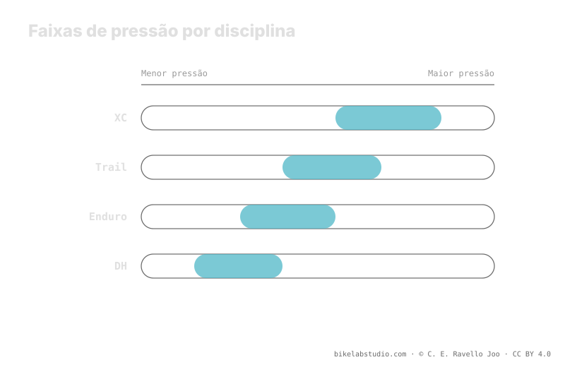

A modalidade desloca a faixa, não fixa um número. O XC puxa para cima por eficiência e por carcaças leves; trail e enduro baixam a faixa para ganhar aderência e absorção em terreno técnico; o DH às vezes sobe mesmo sendo a modalidade mais agressiva, porque a velocidade de impacto castiga o aro. A carcaça e os insertos também escalam com a modalidade. Como em todo pneu, a pressão não é um número: o valor exato quem fecha é a calculadora.
"Quantos PSI para enduro?" não tem uma resposta seca. A modalidade fixa a intenção —eficiência, aderência ou sobrevivência do aro— e com ela empurra a faixa para cima ou para baixo. Mas continua sendo uma faixa que só se fecha com seu peso, largura, aro e carcaça.
Pare de adivinhar: a Calculadora de Pressão PSI te dá sua faixa (não um número) segundo seu peso, largura, aro e modalidade. ▶ Abrir a calculadora PSI
Cada modalidade de MTB persegue uma prioridade diferente, e essa prioridade decide em que direção a banda de pressão se desloca. O cross-country (XC) busca andar rápido e eficiente: menos deformação do pneu significa menos resistência ao rolamento e menos balanço na curva em velocidade, então tende a rodar um pouco mais alto. O trail e o enduro priorizam aderência e controle em descidas técnicas, por isso baixam a faixa para que o pneu se adapte mais ao terreno e absorva impactos. A modalidade não te dá a cifra: te diz para onde inclinar a banda.

A modalidade não responde "qual pressão?": responde "para onde movo a banda e por quê?". Eficiência a sobe, aderência a baixa, e a velocidade de impacto pode voltar a subi-la.
No XC o terreno costuma ser mais rolante e as carcaças, leves para economizar peso. Rodar baixo demais castiga em duas frentes: aumenta a resistência ao rolamento por deformação e expõe uma carcaça fina a golpes secos contra o aro. Por isso o XC tende à parte alta da faixa: prioriza velocidade e proteção de um pneu que não perdoa. Não é que "o XC use muita pressão"; é que sua prioridade empurra a banda para cima.
No trail e, sobretudo, no enduro, o terreno fica técnico e as descidas mandam. Aqui interessa que o pneu se adapte ao chão: mais área de contato, mais aderência, mais absorção. Isso pede baixar a faixa. Mas baixar sem proteção convida ao desvedar (burping) e aos golpes no aro, então essas modalidades se apoiam em carcaças mais grossas e insertos para poder fazê-lo com margem. Quanto mais protegido está o conjunto, mais baixo você pode levar a banda com segurança.
O downhill (DH) é a modalidade mais agressiva, e o instinto manda baixar ao máximo para aderir. Mas no DH a velocidade de impacto contra pedras e raízes é tão alta que uma pressão baixa demais deixa o aro exposto a golpes secos e ao desvedar (burping) em alta velocidade. Por isso muitos pilotos de DH sobem um pouco em relação ao enduro, apoiando-se em carcaças DH e insertos. É a modalidade em que o piso da banda é marcado pela sobrevivência do aro, não só pela aderência.
A pressão não vive sozinha: viaja com a carcaça e com os insertos, e ambos escalam com a modalidade. O XC monta carcaças leves; trail, enduro e DH sobem para carcaças de mais lonas e muitas vezes adicionam insertos que protegem o aro e sobem o piso do burping. Esse blindagem é o que permite às modalidades agressivas baixar a banda sem castigar o aro. Quando você troca de modalidade, não troca só o número: troca todo o sistema que sustenta esse número.
Não há número único. XC sobe por eficiência, trail e enduro baixam por aderência, DH às vezes volta a subir por velocidade de impacto. Sai uma faixa, não uma cifra.
Porque prioriza eficiência e carcaças leves: menos deformação, menos resistência, menos risco de golpe. O enduro baixa para ganhar aderência no técnico.
Porque a velocidade de impacto castiga o aro; uma pressão muito baixa desveda em alta velocidade. Sobe-se um pouco e protege-se com carcaça DH e insertos.
Sim. XC leve; trail, enduro e DH escalam para carcaças grossas e insertos, e essa blindagem é o que permite baixar mais a banda sem quebrar o aro.
A modalidade inclina a banda; a Calculadora de Pressão PSI fecha sua faixa real por roda segundo peso, largura, aro e modalidade. ▶ Abrir a calculadora PSI
© 2026 BikeLab Studio. Conteúdo sob CC BY 4.0: você pode copiar, traduzir e publicar, inclusive com fins comerciais. A citação é obrigatória. Sem atribuição, a licença é revogada automaticamente (CC BY 4.0, §6.a) e o uso passa a ser violação de direitos autorais: solicitamos a retirada do conteúdo e sua desindexação. · Design e propriedade: Carlos Ravello Joo